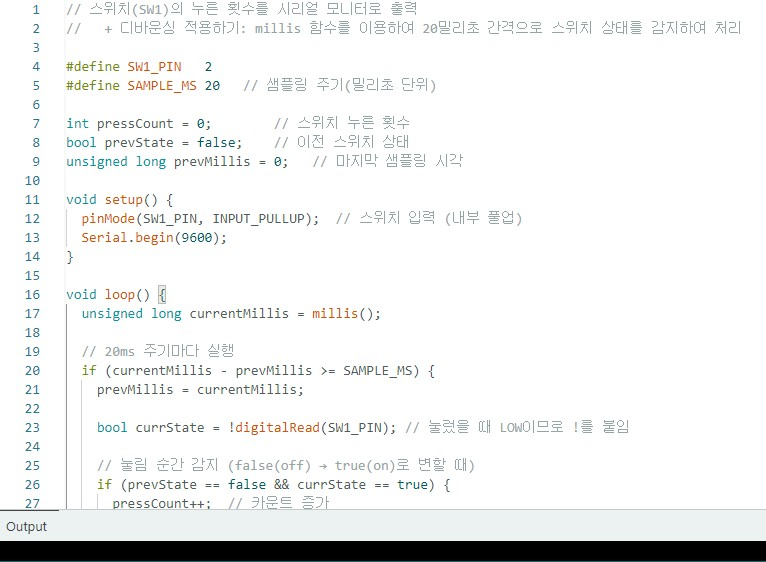
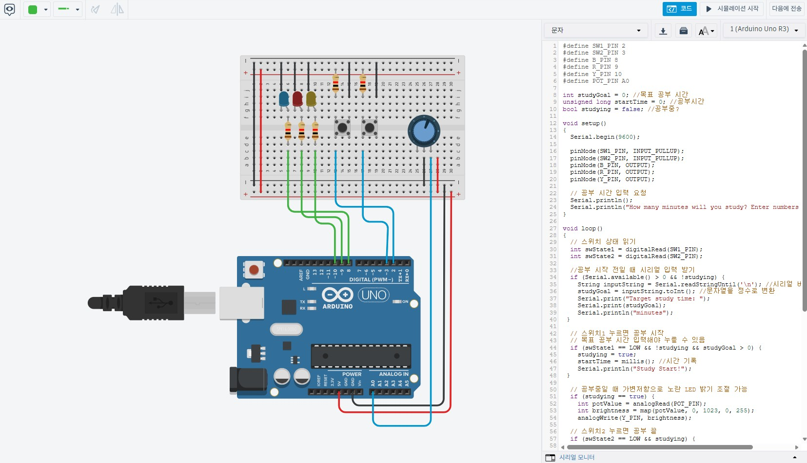
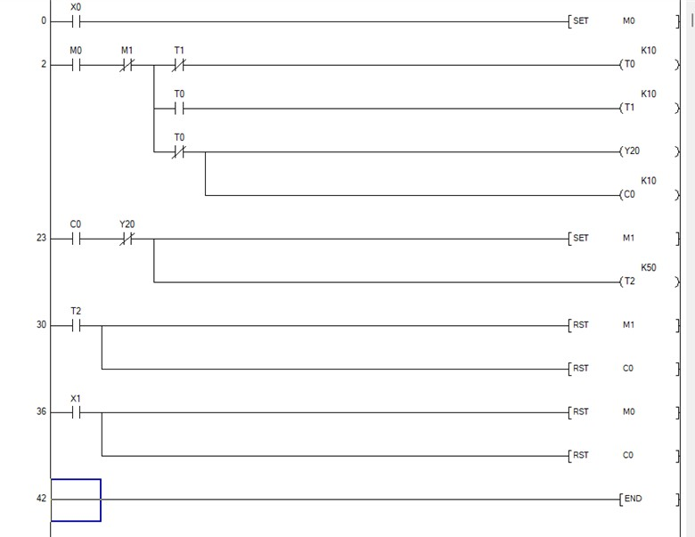
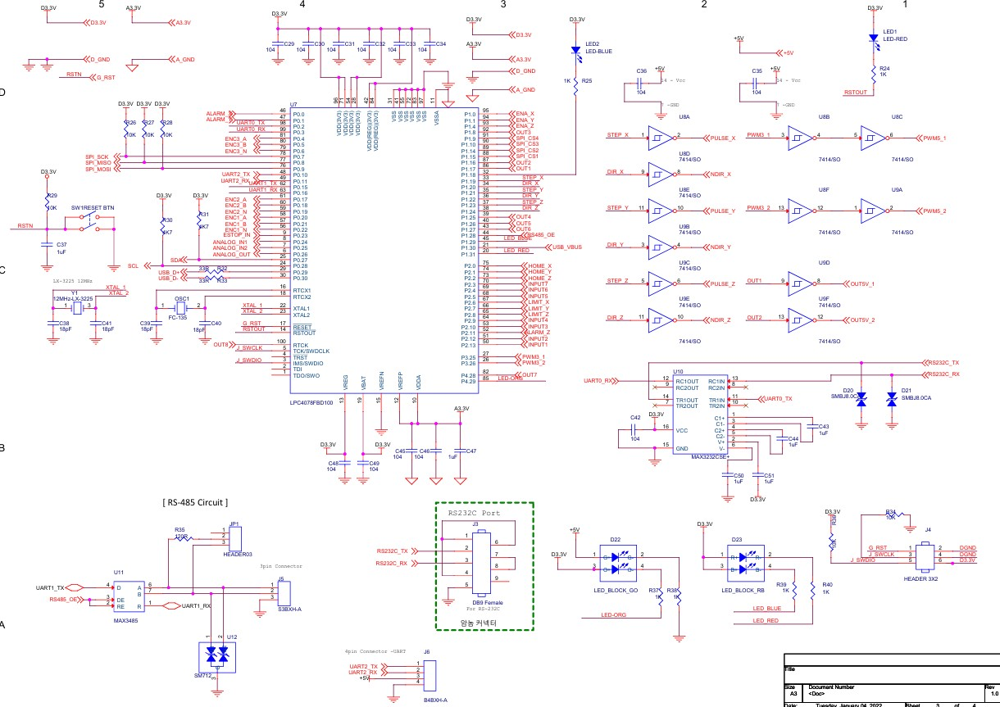
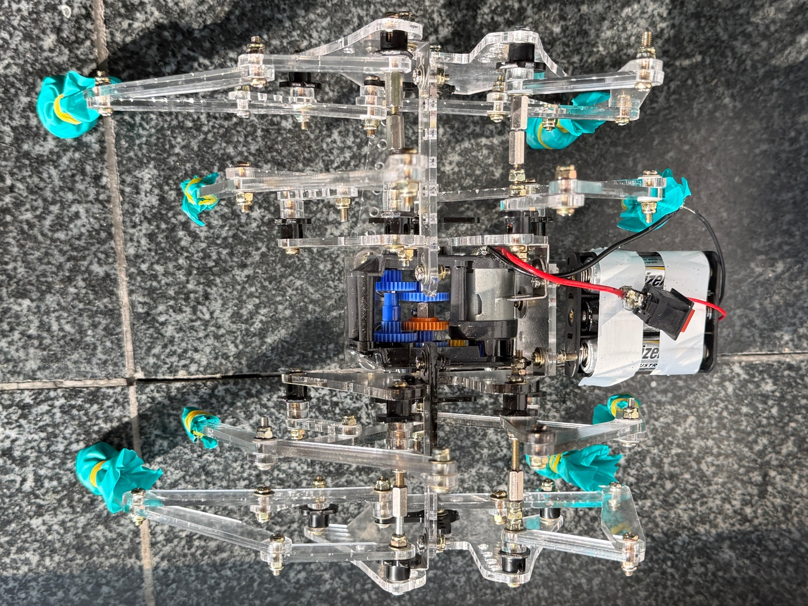
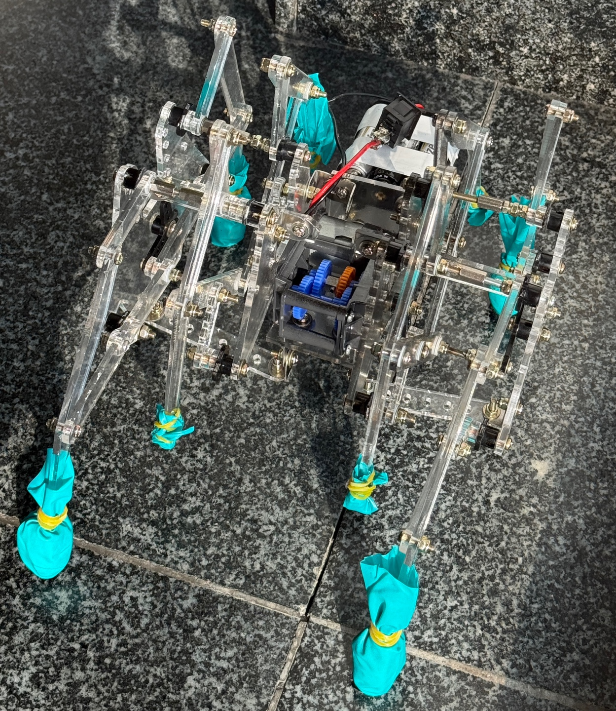

공정의 한계를 돌파하는
엔지니어 신우정입니다.
스케일링 마스터 | 에이전틱 아키텍트 | SK하이닉스 유지보수 엔지니어
핵심 역량
동양미래대학교 로봇소프트웨어과 전공 기반의 기술적 문제 해결력

프로그래밍 (Python & C)
- Python 데이터 분석
Scikit-learn, TensorFlow 기반 AI 알고리즘 구현 및 로봇 제어 응용. - C/C++ 임베디드 최적화
객체 지향 개념을 활용한 하드웨어 제어 및 효율적 메모리 관리 코딩.

장치 제어 (Arduino)
- 지능형 액추에이터 제어
센서 데이터 기반 Servo, DC, 스테퍼 모터 복합 구동 시스템 설계. - 상태 머신(State Machine)
Non-blocking 기법을 활용한 오류 없는 고밀도 제어 로직 구현.

공정 자동화 (PLC)
- 시퀀스 제어
GX Works3 기반 공정 자동화 설비 운영 및 이상 유무 진단/유지보수. - 실무 자동화
공기압 실린더 및 솔레노이드 밸브 연동 제어 등 산업 현장 설비 운영 역량.

반도체 기초 지식
- 회로 설계 및 분석
TR, FET의 동작 원리를 활용한 스위칭 회로 설계 및 계측 검증. - 디지털 논리 설계
순차 논리 회로 시뮬레이션 및 정밀 하드웨어 로직 구성 능력 보유.
유지보수
프로젝트: AJ-BOT
최적화된 링크 구조 기반의 보행형 로봇


단순 구동을 넘어, 정밀 설계를 통한 하드웨어 한계 극복 프로세스
설계 무게 대비 출력 부족으로 보행 속도 저하 인지
→ 기어비(Gear Ratio) 정밀 재조정을 통해 구동 효율 최적화
아크릴 소재 발판의 지면 미끄러짐 분석
→ 소재 보강 및 마찰 계수 제어를 통해 보행 안정성 확보
소음 및 부품 마모 원인 추적
→ CAD 도면 재검토 및 각 조인트의 수평 정밀 정렬을 통한 마찰력 제로화
단순 제작에 그치지 않고, AutoCAD 설계 도면(Plan)과 실제 조립된 AJ-BOT(Physical) 사이의 기구학적 오차를 정밀 측정하여 링크 메커니즘의 동기화와 기어 구동 효율을 최적화했습니다.
VERIFY: CAD BLUEPRINT vs ACTUAL
RESULT: LINK ALIGNMENT SYNC 99.8%
STATUS: SCALE CALIBRATED
ACTION: 0.1mm FINE TUNING APPLIED예정된 프로젝트 및 미래 로드맵
SK하이닉스와 함께 성장할 미래 유지보수 기술 로드맵
PLC 및 장비 S/W 몰입 교육
반도체 부트캠프의 몰입형 교육을 통해 실제 현장에서 쓰이는 PLC 실무 역량과 반도체장비 S/W 구현 능력을 체득하여, 즉시 투입 가능한 유지보수 엔지니어로 성장하겠습니다.
이송로봇 제작
동양로봇경진대회 출전을 목표로, 반도체 생산 라인의 핵심인 웨이퍼 이송의 정밀도와 안정성을 극대화하는 로봇 아키텍처를 설계할 예정입니다.
캡스톤 디자인 (Capstone Design)
전공 지식과 AI 기술을 융합하여, 실제 산업 현장의 모순을 해결하는 지능형 시스템을 개발하는 최종 프로젝트입니다.
마이크로디그리 (AI/전기제어)
인공지능트랙 또는 전기제어트랙 마이크로디그리를 통해 특정 분야의 깊이 있는 전문 지식을 확보하고 기술적 완성도를 높이겠습니다.
SK하이닉스의 미래를 함께 설계할 준비된 유지보수 엔지니어입니다.